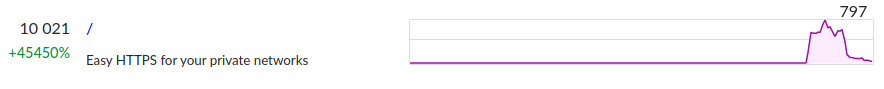
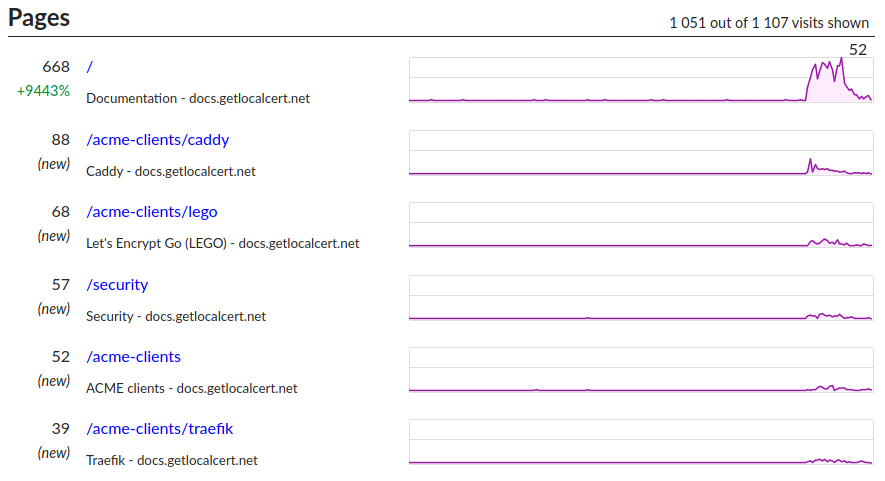
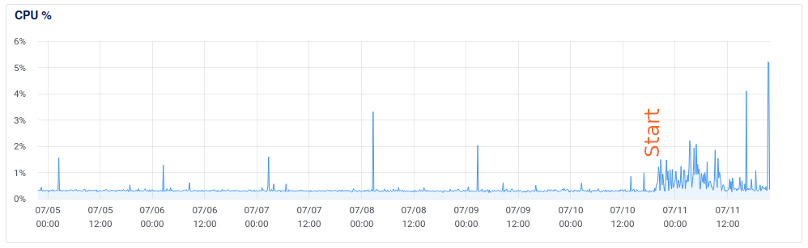

Yesterday I submitted a project to Hacker News (HN) which ended up being ranked 6th for the day. I was excited to see this success, and quite curious to see what sort of load this generated.
My submission directly linked to my marketing site's home page, so let's start there.
I host my static web pages via Netlify since it's so easy to use. The free plan supports 100 GB of data transfer, of which I consumed 4 GB. The site stayed online throughout the day, and I didn't see any complaints from HN users about slowness. Netlify is great for this sort of site.
I use GoatCounter for "privacy-friendly web analytics". Here's the traffic on the marketing site:

This is about forty views per vote. I'm uncertain how many users block goatcounter, HN users probably do so much more than average, so actual numbers could be higher. Netlify's built-in analytics should have better data.
The start of my marketing funnel is around 10,000. Did those viewers drop off, or stick around?
My documentation site is also a static site hosted on Netlify.

1,100 views; 11% of the marketing site views made it here. That's good, people were interested and continued to read.
The console is the main application. I don't use goatcounter on my console as I have server-side logs I can use to analyze metrics. Server logs showed load generally stayed below one request per second, but reached 150 RPS very briefly.
Sign-ups
How many people signed up? At the 24-hour mark, I had ~200 new accounts; 2% of the marketing site views resulted in a sign-up. I also saw ~450 new DNS zones were created.
Server Load
Thankfully my console also stayed healthy through the load spike. I'm currently running on a single DigitalOcean (affiliate link) $6/month droplet with 1 GB of memory and 1 CPU. Load stayed quite low through the load spike, showing that even the second-cheapest DigitalOcean droplet can easily handle HN-level load spikes. Actual performance will vary based on your application.

The console is a server-side rendered Django application with a Postgres database running on the same droplet. I eventually want to switch to managed Postgres, but this configuration can handle many more users, so I'm not in a rush. I did a couple of things to keep the site lightweight, like serving the Bulma CSS framework (30kB) from a CDN. NoScript users may have noticed that all the getlocalcert sites work without enabling JavaScript. There's a tiny amount and it's optional.
Looking at certificate transparency logs I see five new certificates were successfully issued, including two wildcards. 2% of my new users have successfully issued production-grade, globally trusted certificates already. Issuing a certificate takes more time and effort than just loading a web page, so more issuances from this cohort may still be coming.
I hope you found these stats interesting.
Thanks to all who checked out
getlocalcert.net
yesterday.
Hello! I'm Robert Alexander, a freelance software developer and security consultant. This blog features some of my work and thoughts on software, the cloud, and security. You can get updates on my posts with your favorite RSS client or on Substack. I'm also on Mastodon.